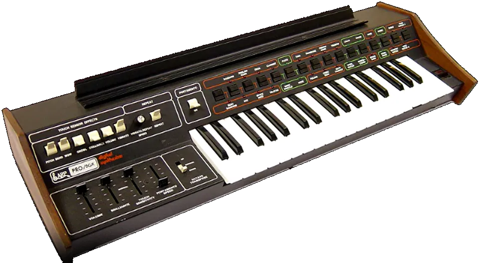

Al igual que sus contemporáneos del rock progresivo, los músicos de Funk (así como los de Jazz, Soul y R&B) siempre buscaban nuevos sonidos y texturas, especialmente si eran funky. Pero donde el hombre blanco usaba sintetizadores para improvisar, el hombre negro los usaba para "jammin on the one" (es decir, tocar con fuerza en el primer tiempo de cada compás), que es el bajo (sic, juego de palabras intencionado) de toda la música Funk.

Just like their prog rock contemporaries, Funk musicians (along with Jazz, Soul, and R&B musicians) were always chasing new sounds and textures — especially if they were funky. But where the white man used synthesizers to noodle around, the Black man used them to "jam on the one" (that is, hit hard on the first beat of every bar), which is the bassis (sic - pun intended) of all Funk music.
Las bandas de funk de los 70 eran conjuntos grandes, algunos de los cuales llegaban a tener 20 miembros o más, todos en el escenario a la vez. Los sintetizadores simplificaron y abarataron el proceso de grabación. ¿Para qué contratar una sección de instrumentos de viento o cuerdas cuando puedes simplemente sobregrabar un sintetizador? Además: Los instrumentos de viento y cuerdas estaban dominados por la música disco blanca, diluida y sobresaturada, comercializada, algo de lo que el funk negro quería distanciarse.
70s funk bands were big outfits, some with 20 members or more, all on stage at once. Synthesizers simplified and cut the cost of recording. Why hire a horn or string section when you could just overdub a synth? Also: horns and strings were dominated by watered-down, oversaturated, commercialized white disco music — something Black funk wanted to distance itself from.
Para los 80, la dependencia de los equipos electrónicos dio lugar al género que aquí nos centra: el electrofunk o synth-funk. Técnicamente, precedió al electro, pero no recibió el nombre hasta que Afrika Bambaataa lo puso al alcance del público.
By the 80s, the reliance on electronic gear gave rise to the genre we're focused on here: electrofunk, or synth-funk. Technically, it preceded electro, but it didn't get its name until Afrika Bambaataa brought it to the public.
Mientras que el funk de los 70 se definía como un ambiente relajado de psicodelia, atuendos extravagantes y teatralidad de jam band, el funk de los 80 era más compacto, con más clase, mejor vestido y más centrado.
While 70s funk defined itself through a laid-back vibe of psychedelia, outrageous outfits, and jam-band theatrics, 80s funk was tighter, classier, better dressed, and more focused.